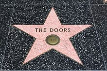

The Doors
The Doors (с англ. — «Двери») — американская рок-группа, созданная в 1965 году в Лос-Анджелесе, оказавшая сильное влияние на культуру и искусство 60-х годов. Загадочные, мистические, иносказательные тексты песен и яркий образ вокалиста группы, Джима Моррисона, сделали её едва ли не самой знаменитой и равно же противоречивой группой своего времени. После смерти в 1971 году Джима Моррисона оставшиеся музыканты продолжили выступать и записываться в формате трио, а в 1973 году группа прекратила своё существование. В общей сложности в США было реализовано 32 500 500 копий их альбомов. Группа продала более 100 миллионов альбомов по всему миру. The Doors стала первой американской группой, у которой было 8 золотых альбомов подряд. В 1993 году были введены в Зал славы рок-н-ролла.
История The Doors началась в июле 1965 года, когда студенты кинематографического колледжа UCLA Джим Моррисон и Рэй Манзарек повстречались на пляже, будучи немного знакомыми ранее. Моррисон рассказал Манзареку, что пишет стихи, и предложил создать группу. Текст Моррисона «Moonlight Drive» впечатлил Манзарека, и он согласился.
К этому времени Манзарек уже играл в группе Rick and The Ravens (англ.) со своим братом Риком. За своеобразную манеру пения Рэй получил прозвище Screamin' Ray Daniels — скорее всего, по аналогии с известным певцом Screamin' Jay Hawkins'ом. В августе к музыкантам присоединился Джон Денсмор, игравший в группе The Psychedelic Rangers (нид.)русск. вместе с гитаристом Робби Кригером. Денсмор и Кригер познакомились с Рэем Манзареком на занятиях по йоге и медитации.
2 сентября 1965 года Моррисон, Манзарек и Денсмор вместе с музыкантами из «Rick and The Ravens» и бас-гитаристкой Патти Салливан записали первые студийные версии песен будущих The Doors. Позднее эти записи («Moonlight Drive», «My Eyes Have Seen You», «Hello, I Love You», «Go Insane» (раннее название композиции «A Little Game» из «Celebration of the Lizard»), «End of the Night» и «Summer’s Almost Gone») неоднократно издавались как бутлег. В 1997 году они вышли в составе «коробочного» сборника песен The Doors.
В том же месяце The Doors пригласили в группу и Робби Кригера. Четвёрка (Джим Моррисон, Рэй Манзарек, Джон Денсмор и Робби Кригер) стала классическим составом The Doors. Именно эти музыканты записали наиболее известные альбомы группы в период с 1967 по 1971 годы.
Название группы своим появлением обязано творчеству английского писателя Олдоса Хаксли. В своём эссе «Двери восприятия» (англ. The Doors of Perception) (1954) писатель взял эпиграфом строки из поэмы «Бракосочетание Рая и Ада» английского поэта XVIII века Уильяма Блейка: «If the doors of perception were cleansed, every thing would appear to man as it is: infinite». В русском переводе Максима Немцова (1991) эта фраза звучит как «Если бы двери восприятия были чисты, все предстало бы человеку таким, как оно есть — бесконечным».
The Doors выглядели необычно среди других рок-групп, потому что они не использовали бас-гитару на концертных выступлениях. Вместо этого Манзарек играл басовые партии левой рукой на только что появившемся клавишном инструменте Fender Rhodes Bass. Правой рукой он играл на другом инструменте, например, электрооргане (таком, как транзисторный Vox Continental — именно он звучит в знаменитой песне Light My Fire). Однако группа время от времени приглашала сессионных бас-гитаристов на время записи в студии.
Большинство композиций The Doors обычно приписывается только Моррисону и Кригеру. На самом деле многие из произведений группы — плоды совместного творчества музыкантов. Они вместе работали над ритмическими и гармоническими аранжировками, в то время как Моррисон или Кригер предоставляли текст и исходную мелодию. Иногда целый фрагмент песни был создан не её первоначальным автором — например, соло Манзарека на электрооргане в начале песни Light My Fire.
Творчество группы хорошо принималось публикой в течение всей её карьеры, хотя в 1968 году после выхода сингла Hello, I Love You случился локальный скандал. Рок-пресса указала на сходство в музыкальном плане этой песни и хита 1965 года All Day and All of the Night группы The Kinks. Музыканты The Kinks вполне согласились с критиками. Известно, что гитарист The Kinks Дэйв Дэйвис делал вставки из Hello, I Love You во время концертного исполнения All Day and All of the Night — в качестве издевательского комментария по данному поводу.
К 1966 году группа постоянно выступала в клубе The London Fog и вскоре продвинулась до престижного клуба Whisky a Go Go. 10 августа 1966 года с группой связалась фирма Elektra Records в лице её президента Джака Хольцмана (англ.)русск.. Это произошло по настоянию Артура Ли, вокалиста группы Love, которая записывалась на Elektra Rec. Хольцман и продюсер Electra Rec. Пол А. Ротшильд посетили два выступления группы в Whisky a Go Go. Первый концерт показался им неровным, второй же просто загипнотизировал. После этого 18 августа музыканты The Doors подписали контракт с фирмой, — так было положено начало долгому успешному сотрудничеству с Ротшильдом и звукооператором Брюсом Ботником.
Соглашение пришлось как нельзя вовремя, потому что 21 августа клуб выгнал музыкантов из-за вызывающего исполнения песни The End. Инцидент заключался в том, что сильно охрипший Джим Моррисон в наркотическом угаре представил версию трагедии Софокла «Царь Эдип» в фрейдистском ключе с явной аллюзией на Эдипов комплекс:
<<— Father— Yes, son?
— I want to kill you.
— Mother! I want to fuck you...>>
Подобные случаи происходили вплоть до самой смерти Моррисона, что создало своеобразный скандальный и неоднозначный образ группы.
В 1966 году The Doors записали свой первый альбом с одноимённым названием. Альбом был записан за несколько дней в конце августа — начале сентября; практически все песни записывались в один дубль. Однако вышел он только в 1967 году и встретил в основном сдержанные оценки со стороны критиков. На альбоме были представлены наиболее известные песни из имевшегося к тому моменту репертуара The Doors, включая «Light My Fire» (занимающая 35 место в списке 500 величайших песен по версии журнала Rolling Stone) и 11-минутную драматическую «The End». Со временем дебютный альбом завоевал всеобщее признание и считается теперь одним из лучших альбомов в истории рок-музыки (например, занимает 42 место в списке 500 величайших альбомов по версии журнала Rolling Stone). Многие из композиций с пластинки стали хитами группы и затем неоднократно издавались на сборниках лучших песен, а также исполнялись группой на концертах.
Моррисон и Манзарек выступили в качестве режиссёров неординарного промофильма для сингла «Break on Through», — примечательного образца развития жанра музыкального видео.
Альбом Strange Days, вышедший в октябре того же года, был записан на более совершенном оборудовании, и занял третью позицию в американских чартах. В отличие от дебютной пластинки на нём не было чужих песен. Присутствуют и элементы новаторства, например, чтение Моррисоном одного из своих ранних стихотворений «Horse Latitudes» («Лошадиные широты»), наложенного на белый шум. Композиция «When the Music’s Over» затем неоднократно исполнялась группой на концертах, а «Strange Days» и «Love Me Two Times» широко издавались на различных сборниках.
По словам участников группы, начиная с 1968 года Моррисон начал испытывать серьёзные проблемы с алкоголем. «Он определённо понимал, что мы не были довольны его поведением. Но он был совершенно не способен контролировать себя. Он полностью сошёл с рельсов, нёсся на потерявшем управление поезде — и когда ты так разгоняешься, остаётся только прыгать.»
В отличие от предыдущих студийных сессий, альбом Morrison Hotel приходилось записывать, пересматривая дневники и книжные записи вокалиста в поиске новых идей. По словам продюсера Пола Ротшильда, «Джим или просто не хотел работать, или приходил в студию совершенно пьяным.» Несмотря на трудности записи, вышедший в феврале 1970 года альбом оживил коммерческую карьеру группы. В Америке Morrison Hotel поднялся до 4-й строчки, а в Великобритании стал наиболее продаваемым альбомом The Doors на тот момент, заняв 12-ю позицию. Группа объявила о возвращении на сцену и устроила четыре шоу в Felt Forum в Нью-Йорке, прошедших с аншлагом. Однако между Моррисоном и остальными участниками группы возникла отчуждённость, он перемещался отдельно от них. Успехи концертов целиком зависели от настроения и состояния Моррисона, в свою очередь, регулярно менявшегося под воздействием кокаина, выпивки и антидепрессантов. Выступление The Doors на фестивале на острове Уайт в 1970 году (для которого Моррисону пришлось получить от судей специальное разрешение) Робби Кригер впоследствии описал как «один из худших концертов, которые он помнит».
После смерти Моррисона в 1971 году остальные участники The Doors продолжили творить под прежним названием и выпустили два альбома, которые не смогли повторить коммерческий успех предыдущих пластинок. После этого музыканты занялись сольным творчеством.
В 1978 вышел в свет альбом An American Prayer, состоящий из прижизненных фонограмм чтения стихотворений Джима Моррисона в исполнении автора, положенных на ритмическую основу, созданную остальными участниками группы уже после его смерти. Альбом был по-разному встречен поклонниками и критиками. В частности, бывший продюсер группы Пол Ротшильд высказался следующим образом:
Для меня сотворенное на An American Prayer равносильно тому, как если бы взяли полотно Пикассо, разрезали его на кусочки размером с марку и наклеили их на стену супермаркета
В 1979 году режиссёр Фрэнсис Форд Коппола использовал композицию «The End» группы в своём фильме Апокалипсис сегодня о войне во Вьетнаме с Мартином Шином и Марлоном Брандо в главных ролях.
В 1988 году фирма «Мелодия» издаёт сборник песен The Doors в рамках серии виниловых дисков под названием «Архив популярной музыки». Пластинка «Группа „Дорз“. Зажги во мне огонь» стала первым выпуском этой серии. Это издание составлено из композиций с альбомов The Doors (1967), Morrison Hotel (1970) и L.A. Woman (1971).

Могила Джима Моррисона на кладбище Пер-Лашез в Париже
В данный период звукозаписывающие компании продолжают активно издавать всевозможные сборники, антологии и концертные выступления группы (см. дискографию).
После выхода в 1991 году фильма Оливера Стоуна «Дорз» началась вторая волна «дорзомании». Только в 1997 году группа продала в три раза больше альбомов, чем за три предыдущих десятилетия вместе взятых. А 3 июля 2001 года в тридцатую годовщину со дня смерти Моррисона на кладбище Пер-Лашез, где похоронен вокалист The Doors, собралось больше 20 тыс. человек.
В 1995 году был ремастирован и переиздан альбом An American Prayer. В 1998 году вышел в свет комплект дисков The Doors Box Set, в который вошли не издававшиеся ранее записи. В 1999 году полному ремастерингу подверглись студийные альбомы группы. Эти версии выпущены в составе комплекта дисков The Complete Studio Recordings. Однако данное название не вполне соответствует действительности, так как не содержит двух альбомов, выпущенных после смерти Моррисона: Other Voices и Full Circle. Кроме первых шести альбомов, в этом комплекте присутствует отдельный диск с редкими записями группы.
В начале 2000-х годов Робби Кригер начал работу над сборником ранее не издававшихся концертных записей группы. Записи, поступавшие из разных источников, были ремастированы Брюсом Ботником. Компиляция на четырёх CD вышла под лейблом Bright Midnight Records в ноябре 2003 года.
В 2003 году Рэем Манзареком и Робби Кригером была создана группа The Doors of the 21st Century (рус. The Doors ("Двери") XXI века), однако поклонники встретили эту идею противоречиво. Кроме этого, барабанщик Джон Денсмор не только не пожелал присоединиться к своим товарищам, но и, как правообладатель, вместе с семьями Джима Моррисона и Памелы Курсон, воспротивился использованию словосочетания «The Doors» в названии нового проекта Манзерека и Кригера. После судебного процесса в 2005 году музыканты вынуждены были изменить название на Riders on the Storm. Однако за ними было оставлено право использовать словосочетания «бывшие Doors» и «участники The Doors» для публичного самоименования.
7 июля 2011 года группа «Манзарек и Кригер из The Doors» с вокалистом Дэйвом Броком выступила в Москве, а 26 июня 2012 года (к 45-летию альбомов The Doors и Strange Days) музыканты дали концерт в Санкт-Петербурге, а 27 июня состоялось их выступление и в Екатеринбурге. 30 июня 2012 года группа вторично выступила в Москве. Помимо Манзарека, Кригера и Брока, в коллективе выступали Фил Чен (бас-гитара) и Тай Деннис (ударные).
В 2006 году материалы, записанные группой, подверглись существенной переработке. Звукозаписывающие компании решили приурочить к 40-летию группы выход мультимедийного коллекционного издания Perception. Это издание содержит первые 6 альбомов, причём каждый из них состоит из двух дисков — CD и DVD. На компакт-дисках — ремастированные версии альбомов с бонус-треками. На DVD — мультимедийное содержимое: записи альбомов в многоканальных форматах звучания (созданные Брюсом Ботником), видеоклипы и фотографии. Отдельного внимания заслуживает альбом The Doors из этого комплекта. Как оказалось, всем известная запись, существовавшая вот уже 40 лет, была записана с технической неполадкой, в результате чего звучание получилось замедленным и ненатуральным. Данная версия — альбом в том виде, в котором его записывала группа.
В связи со смертью в мае 2013 года Рэя Манзарека (скончался в Германии в возрасте 74 лет от рака) группа окончательно прекратила своё существование, хотя никаких официальных сообщений по этому поводу не было.
Звезда The Doors на голливудской «Аллее славы»